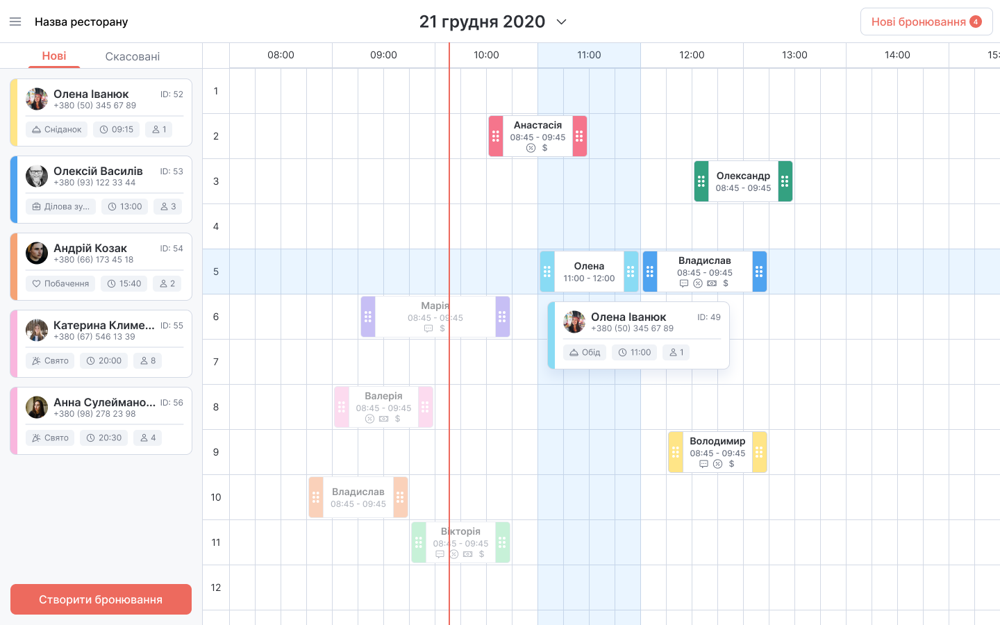
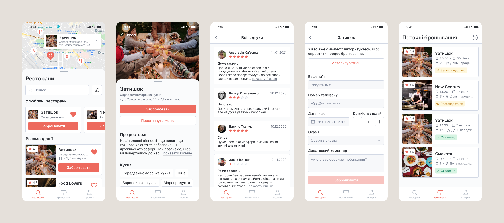
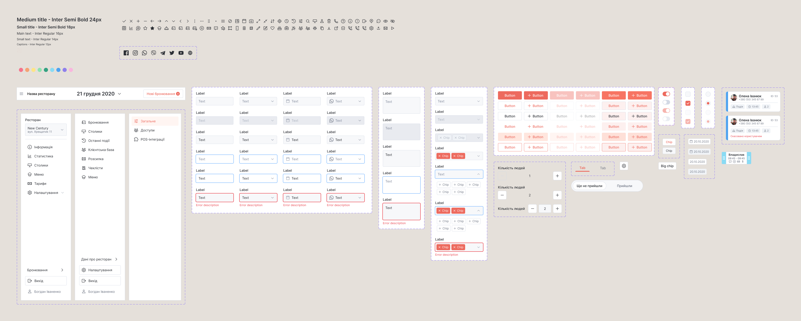
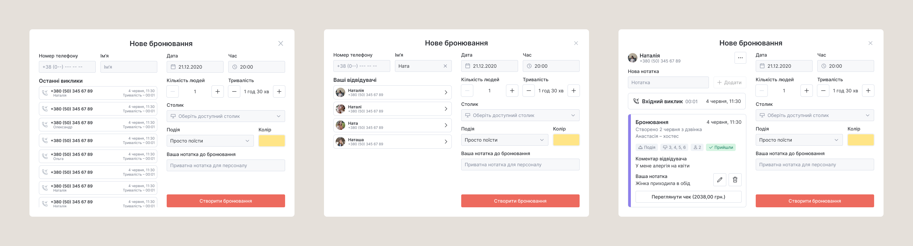

0 → 1 restaurant startup acquired by monobank
Co-founding a restaurant table management startup: pivot from B2C, lockdown and acquisition.

Context
Pivot from B2C to B2B
One day, a university friend approached me with a suggestion to help him design a mobile application for customers to book tables in restaurants. Soon, with a small team of friends, we designed and developed a beautiful iOS application where users could search for restaurants and select a specific table to book... But no restaurant wanted to be on the platform.

That was the moment we realized that we should have at least talked to the restaurant owners first. After a few conversations, we discovered that they didn't want to allow customers to choose a table by themselves. However, we also discovered that the table management process was a mess. And so we found an opportunity to fix it.
Process
Two designers, shared vision
I was working together with another founding designer, but conveniently we had different design expertise: I was responsible for the UX and UI, while she focused on the graphic design. So we did some tasks together, but my main responsibility was to draft new product screens and maintain the component library in Figma.

Solution
Designing for the floor: a touch-first booking timeline
The platform consisted of several products for different types of users. I mostly worked on the waiter side – designing a smooth experience for managing booking requests from phone calls and greeting customers at the entrance. After aligning with the team, I created an interactive timeline for touch screen that allowed waiters to easily manage bookings on the iPad.
The main challenge was designing for the fast-paced restaurant environment — waiters needed to complete actions in a few taps and low precision. So it was essential to make the UX simple and intuitive.

Since we started the project in 2020, a significant challenge was the lockdown. It was not easy to test the solution we offered, but we still managed to perform some live usability testing and see the product in action.
Outcome
Acquisition
The software successfully attracted some big restaurants in Kyiv as customers and, as a result, received attention from the other companies. In 2023, the startup was acquired by monobank – one of the most prominent Ukrainian banks. Why would a bank be interested in restaurant management software? Because they already had a product that offered QR-code menus for restaurants and wanted to expand. The acquisition marked a huge milestone for our team and gave validation that we have built something valuable.
We are inspired by young teams capable of independently creating and developing a unique product. Now, guests will also get convenient table booking, and restaurants — even more useful analytics.